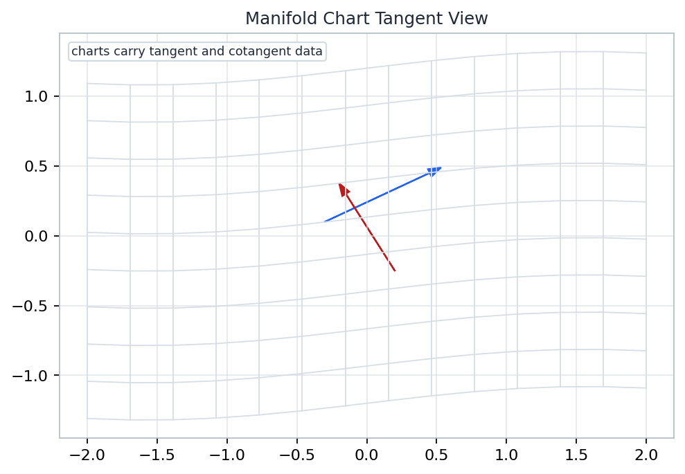
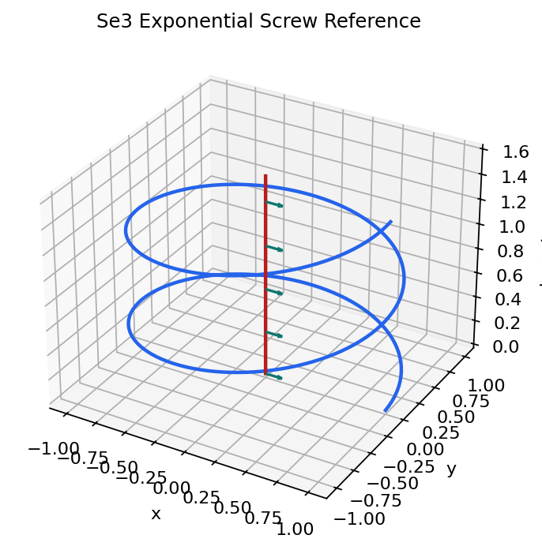
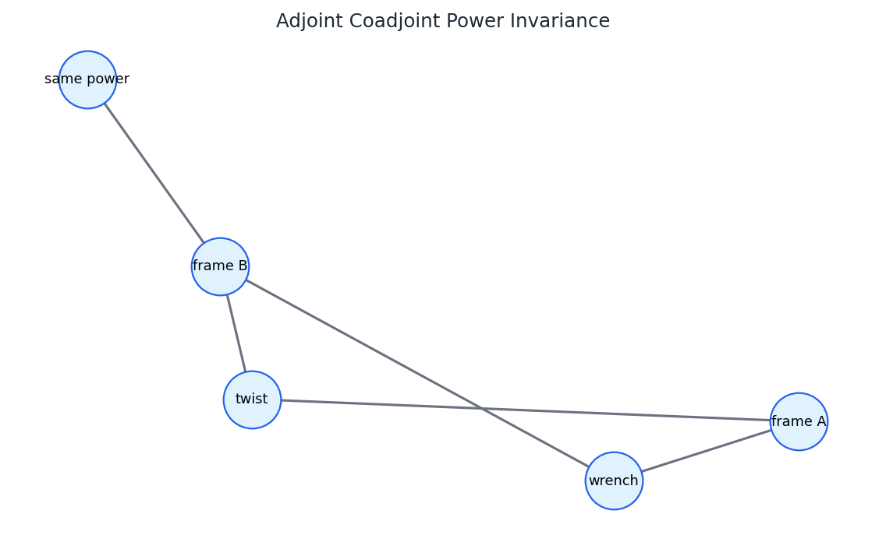

Appendix A
Lie Groups And Robot Kinematics
The appendix supplies the geometric grammar behind rigid poses, instantaneous velocities, wrenches, constraints, and the frame-change rules used throughout robot manipulation.
Poses Are Group Elements Configurations of a rigid body live in \(SE(3)\), where composition means doing one displacement after another.
Velocities Are Tangent Data Instantaneous robot motion is a vector in a tangent space, represented by a twist after choosing a frame.
Forces Are Dual Data Wrenches pair with twists through power; this pairing is the invariant to protect under coordinate changes.
manifold
charts, tangent
Lie group
SO(3), SE(3)
Lie algebra
twists, brackets
dual
wrenches
exponential coordinates are local tools
Open by naming the appendix as the language layer for the rest of the robotics course. Students have already seen matrices, twists, Jacobians, and wrenches; here those objects are reorganized as manifolds, Lie groups, tangent vectors, and dual covectors. Emphasize that the lecture is not adding abstraction for its own sake. It is explaining which quantities are geometric and which quantities are coordinates that must be handled with frame discipline.
Local Coordinates Are Not The Geometry Charts serve objects
Manifold View A chart assigns numbers to nearby points, but the point on the manifold remains the primary object.
Robotics Translation Euler angles, exponential coordinates, and joint coordinates are useful local encodings, not the pose itself.
Failure Mode When a coordinate chart becomes singular, the robot has not vanished; the representation has stopped being reliable.

Generated artifact: chart, tangent vector, and covector data for the appendix.
Use the artifact as a vocabulary map. A chart is an instrument for assigning coordinates, not a replacement for the underlying geometric object. This distinction matters in robotics because common parameterizations can fail while the rigid pose remains perfectly valid. The instructor should invite students to name examples from earlier chapters: Euler angle singularities, local logarithms on SO(3), and joint coordinates that describe a configuration without being the task-space geometry itself.
Tangent And Cotangent Data Vectors and covectors
p
tangent vector
w
covector alpha
alpha(v) is a number
covectors measure tangent vectors
Tangent Vector A tangent vector is an infinitesimal direction attached to a point, not a free-floating arrow in Euclidean space.
Cotangent Covector A covector is a linear measurement on tangent vectors. Constraints, gradients, and wrenches naturally live here.
\( \alpha \in T_p^*M,\quad v \in T_pM,\quad \alpha(v) \in \mathbb{R} \)
Separate the two roles carefully. A tangent vector is a possible instantaneous motion at a configuration or pose. A covector is a linear test applied to such a motion. This distinction is the quiet source of several robotics formulas: a wrench evaluates a twist to produce power, a constraint row evaluates a velocity to produce a forbidden component, and a gradient evaluates a displacement to produce a first-order change. The pairing is geometric even when both objects are represented by arrays.
Flows And Lie Brackets Motion from commutators
\( [X,Y] = XY - YX \)
The bracket records the first non-canceling drift when two infinitesimal motions are alternated.
Robot Meaning Velocity fields that seem individually limited can generate new directions through small loops.
Coordinate Warning The bracket is not ordinary vector subtraction; it tracks how one flow changes another nearby.
start
residual drift
flow X
flow Y
small commutator loop
leaves an epsilon-squared bracket direction
Present the bracket as a motion experiment before presenting it as algebra. Move a small amount along one vector field, then along another, then undo the first two moves in reverse order. On a curved or noncommuting system the loop does not close to second order, and the residual direction is the Lie bracket. This prepares students for why nonholonomic mechanisms can gain directions through maneuvers even when their instantaneous velocity set looks restricted.
Lie Groups In The Robotics Stack One language, many formulas
joint q
local coordinates
g(q)
pose in SE(3)
V, J(q)
tangent velocity
F
wrench dual
g1 g2
compose poses
exp(V-hat t)
integrate twist
F^T V
instantaneous power
Configuration To Pose The forward kinematics map lands in a group, not in a flat vector space.
Pose To Velocity Differentiating a group-valued curve gives a tangent vector that is represented as a twist.
Velocity To Power Wrenches live in the dual space and must transform contragrediently to twists.
This slide compresses the robotics stack into a sequence of geometric types. Joint variables are local coordinates. The end-effector pose is a group element. A velocity is tangent data, and a force or moment object is dual data. The point is not to memorize a taxonomy, but to see why the same adjoint machinery keeps returning in kinematics, Jacobians, wrench transformations, and virtual work.
Lie Algebra At The Identity Linearize once, transport often
identity e
g
xi in Lie algebra
left or right translation
T_e G is the Lie algebra
the Lie algebra is the tangent space at the identity
Definition The Lie algebra \(\mathfrak{g}\) is \(T_eG\), the tangent space at the identity element of a Lie group \(G\).
For Rigid Motion \( \hat V = \begin{bmatrix} \hat\omega & v \\ 0 & 0 \end{bmatrix},\quad V=(\omega,v) \)
This deck reorders the textbook's \(\xi=(v,\omega)\) convention to match the local utilities; adjoint block forms depend on that choice.
Teaching Rule Linear algebra happens in the tangent space; group multiplication happens on the manifold.
The Lie algebra is the linear object attached to the nonlinear group at the identity. That is why so much robot kinematics can use matrices and vectors without pretending that SE(3) itself is a vector space. Declare the convention bridge here: the textbook writes twists as xi equals linear part then angular part, while this deck and the local utilities use angular part then linear part. That convention must remain fixed when discussing adjoints, body velocity, spatial velocity, and wrench pairing.
Exponential Map As Screw Motion Algebra to group
\( g(t)=\exp(\hat V t) \)
A constant twist integrates to a one-parameter subgroup when expressed with a fixed convention.
Screw Reading A revolute component rotates about an axis while the pitch contributes translation along that axis.
Robotics Use Product-of-exponentials kinematics is built from these one-joint screw motions.

Generated artifact: \(SE(3)\) exponential as a screw reference.
Treat the exponential as a bridge rather than as a formula to memorize. A twist lives in the Lie algebra, while the exponential produces a finite rigid motion in the group. The figure makes the screw interpretation visible: rotation and translation are coupled by an axis and pitch. Connect this back to earlier manipulator kinematics, where each joint in the product of exponentials contributes exactly this kind of one-parameter motion.
Canonical Coordinates Are Local Tools Logarithms have domains
T_eG
G
exp
log near identity
branch or cut locus
g = exp(V-hat)
canonical coordinates describe a neighborhood, not the whole group
Useful Local Coordinate Near the identity, a group element can often be represented by a Lie algebra vector through the logarithm.
Not A Global Promise Multiple algebra vectors can map to the same rotation, and logarithms become delicate near singular cases.
\( \xi = \log(g)^\vee \quad \) only after choosing a valid local branch.
This slide prevents an overcorrection. The lecture has warned against treating coordinates as geometry, but canonical coordinates are still extremely useful. The safe statement is local: near the identity, the logarithm gives Lie algebra coordinates for a group element. The unsafe statement is global: pretending that every pose or rotation has a unique, well-conditioned logarithm in all circumstances. Ask students to connect this to rotations near angle pi and to iterative pose-error algorithms.
Actions, Adjoint, Coadjoint Transport with duality
Action A group element changes the frame or point of view from which geometric data is represented.
Adjoint \( V' = \operatorname{Ad}_g V \)
Twist coordinates transform by the adjoint representation.
Coadjoint \( F' = \operatorname{Ad}_g^{-T}F \)
Wrench coordinates transform by the dual rule so power is unchanged.
V
adjoint V
F
coadjoint F
twist transport
dual transport
power before
power after
Make the duality explicit. It is tempting to transform a wrench exactly the same way as a twist because both may be stored as six-vectors. That temptation is wrong in general. A twist is tangent data, and a wrench is cotangent data. The adjoint and coadjoint are linked by the requirement that the scalar pairing, instantaneous power, stay unchanged when the frame changes.
Body And Spatial Velocity Convention declared
Twist Convention Use column twists ordered \(V=(\omega,v)\), with \(\hat V=\begin{bmatrix}\hat\omega&v\\0&0\end{bmatrix}\).
Spatial Velocity \( V_s = (\dot g g^{-1})^\vee \)
Velocity represented in the space frame.
Body Velocity \( V_b = (g^{-1}\dot g)^\vee \)
Velocity represented in the body frame.
space S
body B
g maps body frame into space frame
spatial = adjoint(body)
same motion, two coordinate descriptions
This is the explicit convention slide. State the order of twist coordinates and the definitions of spatial and body velocity slowly. Both velocities describe the same physical curve in SE(3), but they trivialize the tangent vector on different sides of the group. Once this is declared, the relation by the adjoint is no longer a mysterious six-by-six matrix; it is the coordinate-change rule between two frame choices.
Wrenches Pair With Twists Power error 0.0
Dual Convention With \(V=(\omega,v)\), write a wrench as \(F=(n,f)\) so \(F^TV=n\cdot\omega+f\cdot v\).
\( F'^T V' = F^T V \)
The notebook check records power_invariance_error = 0.0 .
Practical Test If a frame transform changes instantaneous power, a twist/wrench convention has been mixed.

Generated artifact: adjoint and coadjoint transformations preserving power.
This is the deck's numerical anchor. The figure and saved check payload agree that the twist and wrench transformations preserve the scalar power pairing. Make clear that zero is not a decorative value. It means the chosen adjoint and coadjoint conventions are compatible for the tested frame displacement. In a robotics codebase, this kind of check catches sign errors, order mistakes, and attempts to transform wrenches as if they were ordinary tangent vectors.
Why There Is No Invariant Euclidean Metric Length is fragile
origin O
origin O+p
v
v plus p cross omega
six-vector length can change
The Obstruction A translated frame mixes angular and linear velocity through cross-product terms such as \(p\times\omega\).
Euclidean Six-Vector Length The ordinary dot product on stacked coordinates is a chart-dependent convenience, not a group-invariant metric on \(SE(3)\).
What Survives Dual pairings and invariant volume are more natural invariants than a universal Euclidean length of a twist.
This is a conceptual warning with practical consequences. A six-vector norm may be useful after a convention and scale have been chosen, but it is not automatically an invariant measurement of physical motion. A change of frame can mix angular and linear components, especially through translation. Students should understand why a Euclidean metric on the coordinate vector is fragile, while the twist-wrench power pairing remains meaningful because it uses the correct dual transformation.
Constraints Are Covectors Rows measure velocities
Velocity Constraint \( a(q)\dot q = 0 \)
The row \(a(q)\) is a covector: it evaluates allowable velocity directions.
Rigid-Body Version \( \lambda(V)=0,\quad \lambda \in \mathfrak{se}(3)^* \)
A contact normal, rolling constraint, or task restriction can be read as an annihilator.
Geometric Payoff Constraints define which tangent directions survive, rather than merely deleting coordinates from a vector.
allowed V
constraint covector
kernel of the covector
constraint(V) = 0
allowed directions are annihilated by the constraint row
Return to cotangent data from slide three and make it operational. A scalar velocity constraint is a covector evaluating a tangent vector. Its kernel is the set of allowed velocities. That viewpoint makes contact normals, rolling constraints, and Jacobian task constraints feel related rather than scattered. It also discourages the common mistake of treating every row vector as if it were an ordinary direction vector in the same space as the velocity.
Volume Survives Where Length Does Not Final invariant
coordinate box
sheared by the adjoint
adjoint determinant = 1 for SE(3)
volume can be invariant even when coordinate lengths are not
Invariant Volume For the rigid-motion adjoint, the transformation can shear coordinates while preserving the natural volume scale.
Manipulability Payoff For a six-dimensional robot map, \(|\det J|\) measures a work-volume scale that is well posed under the invariant volume form, even though individual coordinate lengths are not.
Optimal 6R Design The appendix's design consequence is qualitative: compare manipulators by invariant work volume, then seek architectures whose Jacobian volume stays large and balanced.
Working Habit For every robotics formula, ask: which space is this object in, which frame represents it, and what scalar should survive?
Close by contrasting length and volume, then connect that invariant to the robotics payoff late in the appendix. Ordinary Euclidean length of a six-coordinate twist is not a universal invariant, but determinant volume gives a meaningful work-volume scale for a six-dimensional Jacobian. That is why the appendix can discuss manipulability and optimal six-revolute design without pretending that every twist norm is frame invariant. The final habit is diagnostic: identify the space, the convention, and the invariant before trusting the computation.